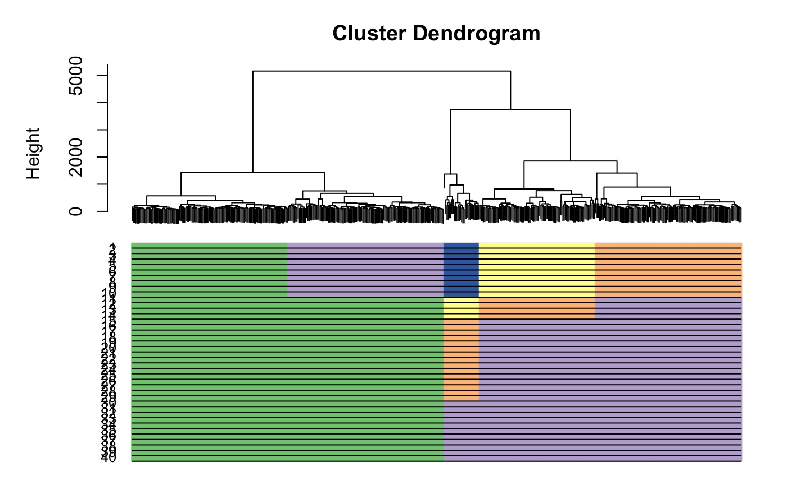

scGPS introduction
Quan Nguyen
2018-05-06
vignette.Rmd1. Installation instruction
# Prior to installing scGPS you need to install the SummarizedExperiment
# bioconductor package as the following
# source('https://bioconductor.org/biocLite.R') biocLite('SummarizedExperiment')
# To install scGPS from github (Depending on the configuration of the local
# computer or HPC, possible custom C++ compilation may be required - see
# installation trouble-shootings below)
devtools::install_github("IMB-Computational-Genomics-Lab/scGPS")
# for C++ compilation trouble-shooting, manual download and installation can be
# done from github
git clone https://github.com/IMB-Computational-Genomics-Lab/scGPS
# then check in scGPS/src if any of the precompiled (e.g. those with *.so and
# *.o) files exist and delete them before recompiling
# create a Makevars file in the scGPS/src with one line: PKG_LIBS =
# $(LAPACK_LIBS) $(BLAS_LIBS) $(FLIBS)
# then with the scGPS as the R working directory, manually recompile scGPS in R
# using devtools to load and install functions
devtools::document()
# update the NAMESPACE using the update_NAMESPACE.sh
sh update_NAMESPACE.sh
#for window system, to update the NAMESPACE: copy and paste the content of the file NAMESPACE_toAdd_cpp_links to end of the file NAMESPACE
#load the package to the workspace
devtools::load_all()2. A simple workflow of the scGPS:
The purpose of this workflow is to solve the following task: given a mixed population with known subpopulations, estimate transition scores between these subpopulation
2.1 Setup scGPS objects
# load mixed population 1 (loaded from sample1 dataset, named it as day2)
devtools::load_all()
day2 <- sample1
mixedpop1 <- NewscGPS_SME(ExpressionMatrix = day2$dat2_counts, GeneMetadata = day2$dat2geneInfo,
CellMetadata = day2$dat2_clusters)
# load mixed population 2 (loaded from sample2 dataset, named it as day5)
day5 <- sample2
mixedpop2 <- NewscGPS_SME(ExpressionMatrix = day5$dat5_counts, GeneMetadata = day5$dat5geneInfo,
CellMetadata = day5$dat5_clusters)
# load gene list (this can be any lists of user selected genes)
genes <- GeneList
genes <- genes$Merged_unique
# select a subpopulation
c_selectID <- 12.2 Run predictions
# run the test bootstrap
LSOLDA_dat <- bootstrap_scGPS(nboots = 2, mixedpop1 = mixedpop1,
mixedpop2 = mixedpop2, genes = genes, c_selectID, listData = list())
#>
#> Call: glmnet(x = t(predictor_S1), y = y_cat, family = "binomial")
#>
#> Df %Dev Lambda
#> [1,] 0 -2.563e-15 2.361e-01
#> [2,] 1 2.749e-02 2.151e-01
#> [3,] 1 5.119e-02 1.960e-01
#> [4,] 2 7.858e-02 1.786e-01
#> [5,] 4 1.103e-01 1.627e-01
#> [6,] 5 1.433e-01 1.483e-01
#> [7,] 6 1.751e-01 1.351e-01
#> [8,] 7 2.061e-01 1.231e-01
#> [9,] 7 2.338e-01 1.122e-01
#> [10,] 7 2.581e-01 1.022e-01
#> [11,] 8 2.798e-01 9.311e-02
#> [12,] 8 2.991e-01 8.484e-02
#> [13,] 9 3.169e-01 7.730e-02
#> [14,] 10 3.355e-01 7.043e-02
#> [15,] 11 3.540e-01 6.418e-02
#> [16,] 11 3.708e-01 5.848e-02
#> [17,] 14 3.863e-01 5.328e-02
#> [18,] 15 4.038e-01 4.855e-02
#> [19,] 19 4.208e-01 4.424e-02
#> [20,] 20 4.389e-01 4.031e-02
#> [21,] 25 4.586e-01 3.672e-02
#> [22,] 26 4.768e-01 3.346e-02
#> [23,] 27 4.933e-01 3.049e-02
#> [24,] 31 5.101e-01 2.778e-02
#> [25,] 39 5.311e-01 2.531e-02
#> [26,] 39 5.531e-01 2.306e-02
#> [27,] 40 5.734e-01 2.102e-02
#> [28,] 44 5.928e-01 1.915e-02
#> [29,] 42 6.113e-01 1.745e-02
#> [30,] 45 6.288e-01 1.590e-02
#> [31,] 47 6.456e-01 1.449e-02
#> [32,] 50 6.623e-01 1.320e-02
#> [33,] 51 6.785e-01 1.203e-02
#> [34,] 51 6.936e-01 1.096e-02
#> [35,] 54 7.079e-01 9.984e-03
#> [36,] 56 7.219e-01 9.097e-03
#> [37,] 57 7.353e-01 8.289e-03
#> [38,] 57 7.481e-01 7.552e-03
#> [39,] 59 7.602e-01 6.882e-03
#> [40,] 61 7.717e-01 6.270e-03
#> [41,] 61 7.831e-01 5.713e-03
#> [42,] 64 7.944e-01 5.206e-03
#> [43,] 64 8.051e-01 4.743e-03
#> [44,] 65 8.154e-01 4.322e-03
#> [45,] 65 8.251e-01 3.938e-03
#> [46,] 67 8.347e-01 3.588e-03
#> [47,] 67 8.441e-01 3.269e-03
#> [48,] 69 8.537e-01 2.979e-03
#> [49,] 69 8.632e-01 2.714e-03
#> [50,] 70 8.725e-01 2.473e-03
#> [51,] 71 8.816e-01 2.253e-03
#> [52,] 72 8.905e-01 2.053e-03
#> [53,] 71 8.989e-01 1.871e-03
#> [54,] 71 9.070e-01 1.705e-03
#> [55,] 71 9.146e-01 1.553e-03
#> [56,] 74 9.219e-01 1.415e-03
#> [57,] 75 9.287e-01 1.289e-03
#> [58,] 76 9.350e-01 1.175e-03
#> [59,] 76 9.408e-01 1.071e-03
#> [60,] 76 9.461e-01 9.754e-04
#> [61,] 76 9.510e-01 8.888e-04
#> [62,] 76 9.554e-01 8.098e-04
#> [63,] 76 9.594e-01 7.379e-04
#> [64,] 76 9.631e-01 6.723e-04
#> [65,] 76 9.665e-01 6.126e-04
#> [66,] 76 9.695e-01 5.582e-04
#> [67,] 76 9.722e-01 5.086e-04
#> [68,] 76 9.747e-01 4.634e-04
#> [69,] 76 9.770e-01 4.222e-04
#> [70,] 76 9.791e-01 3.847e-04
#> [71,] 74 9.810e-01 3.506e-04
#> [72,] 74 9.827e-01 3.194e-04
#> [73,] 74 9.842e-01 2.910e-04
#> [74,] 74 9.856e-01 2.652e-04
#> [75,] 74 9.869e-01 2.416e-04
#> [76,] 74 9.881e-01 2.202e-04
#> [77,] 74 9.891e-01 2.006e-04
#> [78,] 74 9.901e-01 1.828e-04
#> [79,] 75 9.910e-01 1.665e-04
#> [80,] 75 9.918e-01 1.517e-04
#> [81,] 75 9.925e-01 1.383e-04
#> [82,] 75 9.931e-01 1.260e-04
#> [83,] 75 9.938e-01 1.148e-04
#> [84,] 75 9.943e-01 1.046e-04
#> [85,] 75 9.948e-01 9.530e-05
#> [86,] 75 9.953e-01 8.684e-05
#> [87,] 75 9.957e-01 7.912e-05
#> [88,] 75 9.960e-01 7.209e-05
#> [89,] 75 9.964e-01 6.569e-05
#> [90,] 75 9.967e-01 5.985e-05
#> [91,] 75 9.970e-01 5.454e-05
#> [92,] 75 9.972e-01 4.969e-05
#> [93,] 75 9.975e-01 4.528e-05
#> [94,] 75 9.977e-01 4.125e-05
#> [95,] 75 9.979e-01 3.759e-05
#> [96,] 75 9.981e-01 3.425e-05
#> [97,] 75 9.982e-01 3.121e-05
#> [98,] 75 9.984e-01 2.843e-05
#> [99,] 75 9.985e-01 2.591e-05
#> [100,] 75 9.987e-01 2.361e-05
#> [1] "done bootstrap 1"
#>
#> Call: glmnet(x = t(predictor_S1), y = y_cat, family = "binomial")
#>
#> Df %Dev Lambda
#> [1,] 0 -2.563e-15 2.957e-01
#> [2,] 1 4.299e-02 2.694e-01
#> [3,] 1 7.943e-02 2.455e-01
#> [4,] 1 1.108e-01 2.237e-01
#> [5,] 1 1.381e-01 2.038e-01
#> [6,] 2 1.674e-01 1.857e-01
#> [7,] 3 1.962e-01 1.692e-01
#> [8,] 4 2.261e-01 1.542e-01
#> [9,] 5 2.527e-01 1.405e-01
#> [10,] 5 2.771e-01 1.280e-01
#> [11,] 6 3.003e-01 1.166e-01
#> [12,] 6 3.212e-01 1.063e-01
#> [13,] 6 3.397e-01 9.683e-02
#> [14,] 7 3.582e-01 8.823e-02
#> [15,] 9 3.775e-01 8.039e-02
#> [16,] 10 3.962e-01 7.325e-02
#> [17,] 11 4.132e-01 6.674e-02
#> [18,] 13 4.321e-01 6.081e-02
#> [19,] 14 4.517e-01 5.541e-02
#> [20,] 15 4.709e-01 5.049e-02
#> [21,] 16 4.918e-01 4.600e-02
#> [22,] 21 5.130e-01 4.192e-02
#> [23,] 25 5.347e-01 3.819e-02
#> [24,] 27 5.560e-01 3.480e-02
#> [25,] 30 5.764e-01 3.171e-02
#> [26,] 30 5.952e-01 2.889e-02
#> [27,] 33 6.124e-01 2.632e-02
#> [28,] 34 6.298e-01 2.399e-02
#> [29,] 37 6.473e-01 2.186e-02
#> [30,] 38 6.650e-01 1.991e-02
#> [31,] 40 6.824e-01 1.814e-02
#> [32,] 42 6.989e-01 1.653e-02
#> [33,] 42 7.140e-01 1.506e-02
#> [34,] 44 7.281e-01 1.373e-02
#> [35,] 44 7.414e-01 1.251e-02
#> [36,] 44 7.537e-01 1.140e-02
#> [37,] 45 7.651e-01 1.038e-02
#> [38,] 47 7.760e-01 9.461e-03
#> [39,] 49 7.875e-01 8.620e-03
#> [40,] 50 7.989e-01 7.854e-03
#> [41,] 51 8.099e-01 7.157e-03
#> [42,] 53 8.207e-01 6.521e-03
#> [43,] 54 8.317e-01 5.942e-03
#> [44,] 54 8.427e-01 5.414e-03
#> [45,] 54 8.532e-01 4.933e-03
#> [46,] 55 8.631e-01 4.495e-03
#> [47,] 56 8.725e-01 4.095e-03
#> [48,] 56 8.813e-01 3.731e-03
#> [49,] 56 8.896e-01 3.400e-03
#> [50,] 56 8.973e-01 3.098e-03
#> [51,] 55 9.046e-01 2.823e-03
#> [52,] 55 9.114e-01 2.572e-03
#> [53,] 55 9.178e-01 2.343e-03
#> [54,] 55 9.239e-01 2.135e-03
#> [55,] 56 9.295e-01 1.946e-03
#> [56,] 56 9.348e-01 1.773e-03
#> [57,] 56 9.398e-01 1.615e-03
#> [58,] 55 9.445e-01 1.472e-03
#> [59,] 54 9.488e-01 1.341e-03
#> [60,] 55 9.529e-01 1.222e-03
#> [61,] 56 9.567e-01 1.113e-03
#> [62,] 56 9.603e-01 1.014e-03
#> [63,] 56 9.636e-01 9.243e-04
#> [64,] 56 9.667e-01 8.422e-04
#> [65,] 56 9.696e-01 7.674e-04
#> [66,] 56 9.722e-01 6.992e-04
#> [67,] 56 9.746e-01 6.371e-04
#> [68,] 56 9.768e-01 5.805e-04
#> [69,] 56 9.788e-01 5.289e-04
#> [70,] 57 9.807e-01 4.819e-04
#> [71,] 55 9.824e-01 4.391e-04
#> [72,] 55 9.840e-01 4.001e-04
#> [73,] 55 9.854e-01 3.646e-04
#> [74,] 55 9.866e-01 3.322e-04
#> [75,] 55 9.878e-01 3.027e-04
#> [76,] 57 9.889e-01 2.758e-04
#> [77,] 57 9.899e-01 2.513e-04
#> [78,] 57 9.908e-01 2.290e-04
#> [79,] 57 9.916e-01 2.086e-04
#> [80,] 57 9.923e-01 1.901e-04
#> [81,] 57 9.930e-01 1.732e-04
#> [82,] 57 9.936e-01 1.578e-04
#> [83,] 57 9.942e-01 1.438e-04
#> [84,] 58 9.947e-01 1.310e-04
#> [85,] 59 9.952e-01 1.194e-04
#> [86,] 59 9.956e-01 1.088e-04
#> [87,] 59 9.960e-01 9.911e-05
#> [88,] 59 9.963e-01 9.031e-05
#> [89,] 59 9.966e-01 8.228e-05
#> [90,] 59 9.969e-01 7.497e-05
#> [91,] 59 9.972e-01 6.831e-05
#> [92,] 59 9.975e-01 6.224e-05
#> [93,] 59 9.977e-01 5.671e-05
#> [94,] 59 9.979e-01 5.168e-05
#> [95,] 59 9.981e-01 4.709e-05
#> [96,] 61 9.982e-01 4.290e-05
#> [97,] 61 9.984e-01 3.909e-05
#> [98,] 61 9.985e-01 3.562e-05
#> [99,] 61 9.987e-01 3.245e-05
#> [100,] 61 9.988e-01 2.957e-05
#> [1] "done bootstrap 2"2.3 Summarise results
LSOLDA_dat <- bootstrap_scGPS(nboots = 2, mixedpop1 = mixedpop1,
mixedpop2 = mixedpop2, genes = genes, c_selectID, listData = list())
#>
#> Call: glmnet(x = t(predictor_S1), y = y_cat, family = "binomial")
#>
#> Df %Dev Lambda
#> [1,] 0 -2.563e-15 2.825e-01
#> [2,] 1 3.923e-02 2.574e-01
#> [3,] 1 7.246e-02 2.345e-01
#> [4,] 1 1.010e-01 2.137e-01
#> [5,] 2 1.282e-01 1.947e-01
#> [6,] 3 1.574e-01 1.774e-01
#> [7,] 3 1.856e-01 1.617e-01
#> [8,] 4 2.126e-01 1.473e-01
#> [9,] 4 2.383e-01 1.342e-01
#> [10,] 5 2.657e-01 1.223e-01
#> [11,] 5 2.903e-01 1.114e-01
#> [12,] 5 3.123e-01 1.015e-01
#> [13,] 6 3.328e-01 9.251e-02
#> [14,] 6 3.516e-01 8.429e-02
#> [15,] 7 3.686e-01 7.680e-02
#> [16,] 7 3.843e-01 6.998e-02
#> [17,] 7 3.982e-01 6.376e-02
#> [18,] 8 4.109e-01 5.810e-02
#> [19,] 11 4.245e-01 5.293e-02
#> [20,] 13 4.395e-01 4.823e-02
#> [21,] 16 4.545e-01 4.395e-02
#> [22,] 21 4.722e-01 4.004e-02
#> [23,] 23 4.906e-01 3.649e-02
#> [24,] 26 5.107e-01 3.324e-02
#> [25,] 26 5.294e-01 3.029e-02
#> [26,] 27 5.469e-01 2.760e-02
#> [27,] 31 5.640e-01 2.515e-02
#> [28,] 32 5.821e-01 2.291e-02
#> [29,] 34 6.001e-01 2.088e-02
#> [30,] 37 6.179e-01 1.902e-02
#> [31,] 41 6.353e-01 1.733e-02
#> [32,] 44 6.525e-01 1.579e-02
#> [33,] 46 6.701e-01 1.439e-02
#> [34,] 49 6.865e-01 1.311e-02
#> [35,] 52 7.039e-01 1.195e-02
#> [36,] 52 7.201e-01 1.089e-02
#> [37,] 54 7.357e-01 9.919e-03
#> [38,] 56 7.503e-01 9.038e-03
#> [39,] 58 7.640e-01 8.235e-03
#> [40,] 58 7.771e-01 7.503e-03
#> [41,] 61 7.897e-01 6.837e-03
#> [42,] 61 8.021e-01 6.229e-03
#> [43,] 62 8.139e-01 5.676e-03
#> [44,] 65 8.258e-01 5.172e-03
#> [45,] 66 8.375e-01 4.712e-03
#> [46,] 66 8.487e-01 4.294e-03
#> [47,] 64 8.593e-01 3.912e-03
#> [48,] 66 8.690e-01 3.565e-03
#> [49,] 66 8.786e-01 3.248e-03
#> [50,] 68 8.879e-01 2.959e-03
#> [51,] 66 8.964e-01 2.697e-03
#> [52,] 68 9.048e-01 2.457e-03
#> [53,] 68 9.126e-01 2.239e-03
#> [54,] 68 9.197e-01 2.040e-03
#> [55,] 69 9.264e-01 1.859e-03
#> [56,] 68 9.327e-01 1.694e-03
#> [57,] 68 9.382e-01 1.543e-03
#> [58,] 67 9.435e-01 1.406e-03
#> [59,] 67 9.483e-01 1.281e-03
#> [60,] 67 9.527e-01 1.167e-03
#> [61,] 67 9.568e-01 1.064e-03
#> [62,] 67 9.605e-01 9.691e-04
#> [63,] 66 9.640e-01 8.830e-04
#> [64,] 66 9.671e-01 8.046e-04
#> [65,] 66 9.699e-01 7.331e-04
#> [66,] 66 9.725e-01 6.680e-04
#> [67,] 66 9.749e-01 6.086e-04
#> [68,] 66 9.771e-01 5.546e-04
#> [69,] 66 9.791e-01 5.053e-04
#> [70,] 66 9.809e-01 4.604e-04
#> [71,] 66 9.826e-01 4.195e-04
#> [72,] 66 9.841e-01 3.822e-04
#> [73,] 66 9.855e-01 3.483e-04
#> [74,] 66 9.868e-01 3.173e-04
#> [75,] 64 9.880e-01 2.891e-04
#> [76,] 64 9.890e-01 2.635e-04
#> [77,] 64 9.900e-01 2.401e-04
#> [78,] 64 9.909e-01 2.187e-04
#> [79,] 64 9.917e-01 1.993e-04
#> [80,] 64 9.924e-01 1.816e-04
#> [81,] 64 9.931e-01 1.655e-04
#> [82,] 61 9.937e-01 1.508e-04
#> [83,] 61 9.942e-01 1.374e-04
#> [84,] 61 9.947e-01 1.252e-04
#> [85,] 61 9.952e-01 1.140e-04
#> [86,] 62 9.956e-01 1.039e-04
#> [87,] 62 9.960e-01 9.468e-05
#> [88,] 62 9.963e-01 8.627e-05
#> [89,] 62 9.967e-01 7.861e-05
#> [90,] 62 9.970e-01 7.162e-05
#> [91,] 62 9.972e-01 6.526e-05
#> [92,] 62 9.975e-01 5.946e-05
#> [93,] 62 9.977e-01 5.418e-05
#> [94,] 62 9.979e-01 4.937e-05
#> [95,] 62 9.981e-01 4.498e-05
#> [96,] 62 9.982e-01 4.099e-05
#> [97,] 62 9.984e-01 3.734e-05
#> [98,] 62 9.985e-01 3.403e-05
#> [99,] 62 9.987e-01 3.100e-05
#> [100,] 62 9.988e-01 2.825e-05
#> [1] "done bootstrap 1"
#>
#> Call: glmnet(x = t(predictor_S1), y = y_cat, family = "binomial")
#>
#> Df %Dev Lambda
#> [1,] 0 -2.563e-15 2.978e-01
#> [2,] 1 4.363e-02 2.713e-01
#> [3,] 2 8.844e-02 2.472e-01
#> [4,] 2 1.322e-01 2.253e-01
#> [5,] 2 1.703e-01 2.052e-01
#> [6,] 2 2.039e-01 1.870e-01
#> [7,] 3 2.342e-01 1.704e-01
#> [8,] 3 2.660e-01 1.553e-01
#> [9,] 5 2.960e-01 1.415e-01
#> [10,] 5 3.266e-01 1.289e-01
#> [11,] 6 3.541e-01 1.174e-01
#> [12,] 6 3.799e-01 1.070e-01
#> [13,] 6 4.030e-01 9.751e-02
#> [14,] 7 4.237e-01 8.885e-02
#> [15,] 8 4.443e-01 8.095e-02
#> [16,] 9 4.645e-01 7.376e-02
#> [17,] 9 4.835e-01 6.721e-02
#> [18,] 9 5.008e-01 6.124e-02
#> [19,] 9 5.166e-01 5.580e-02
#> [20,] 10 5.310e-01 5.084e-02
#> [21,] 11 5.450e-01 4.632e-02
#> [22,] 15 5.595e-01 4.221e-02
#> [23,] 17 5.807e-01 3.846e-02
#> [24,] 19 5.998e-01 3.504e-02
#> [25,] 21 6.183e-01 3.193e-02
#> [26,] 21 6.350e-01 2.909e-02
#> [27,] 24 6.505e-01 2.651e-02
#> [28,] 26 6.661e-01 2.415e-02
#> [29,] 27 6.812e-01 2.201e-02
#> [30,] 29 6.961e-01 2.005e-02
#> [31,] 29 7.105e-01 1.827e-02
#> [32,] 34 7.240e-01 1.665e-02
#> [33,] 38 7.380e-01 1.517e-02
#> [34,] 41 7.528e-01 1.382e-02
#> [35,] 43 7.677e-01 1.259e-02
#> [36,] 44 7.816e-01 1.147e-02
#> [37,] 45 7.948e-01 1.046e-02
#> [38,] 50 8.080e-01 9.527e-03
#> [39,] 53 8.206e-01 8.680e-03
#> [40,] 54 8.335e-01 7.909e-03
#> [41,] 54 8.455e-01 7.207e-03
#> [42,] 57 8.570e-01 6.566e-03
#> [43,] 60 8.683e-01 5.983e-03
#> [44,] 61 8.788e-01 5.452e-03
#> [45,] 60 8.886e-01 4.967e-03
#> [46,] 61 8.976e-01 4.526e-03
#> [47,] 61 9.060e-01 4.124e-03
#> [48,] 62 9.138e-01 3.758e-03
#> [49,] 62 9.209e-01 3.424e-03
#> [50,] 62 9.275e-01 3.120e-03
#> [51,] 62 9.336e-01 2.842e-03
#> [52,] 62 9.392e-01 2.590e-03
#> [53,] 63 9.443e-01 2.360e-03
#> [54,] 64 9.490e-01 2.150e-03
#> [55,] 64 9.534e-01 1.959e-03
#> [56,] 64 9.573e-01 1.785e-03
#> [57,] 65 9.610e-01 1.627e-03
#> [58,] 65 9.644e-01 1.482e-03
#> [59,] 65 9.675e-01 1.350e-03
#> [60,] 63 9.703e-01 1.230e-03
#> [61,] 64 9.729e-01 1.121e-03
#> [62,] 64 9.753e-01 1.022e-03
#> [63,] 64 9.774e-01 9.308e-04
#> [64,] 65 9.794e-01 8.481e-04
#> [65,] 65 9.812e-01 7.727e-04
#> [66,] 65 9.828e-01 7.041e-04
#> [67,] 66 9.843e-01 6.415e-04
#> [68,] 66 9.857e-01 5.845e-04
#> [69,] 67 9.869e-01 5.326e-04
#> [70,] 67 9.881e-01 4.853e-04
#> [71,] 68 9.891e-01 4.422e-04
#> [72,] 68 9.901e-01 4.029e-04
#> [73,] 68 9.910e-01 3.671e-04
#> [74,] 69 9.918e-01 3.345e-04
#> [75,] 68 9.925e-01 3.048e-04
#> [76,] 68 9.932e-01 2.777e-04
#> [77,] 68 9.938e-01 2.530e-04
#> [78,] 68 9.943e-01 2.306e-04
#> [79,] 68 9.948e-01 2.101e-04
#> [80,] 68 9.953e-01 1.914e-04
#> [81,] 68 9.957e-01 1.744e-04
#> [82,] 68 9.961e-01 1.589e-04
#> [83,] 68 9.964e-01 1.448e-04
#> [84,] 68 9.967e-01 1.319e-04
#> [85,] 68 9.970e-01 1.202e-04
#> [86,] 67 9.973e-01 1.095e-04
#> [87,] 68 9.975e-01 9.980e-05
#> [88,] 68 9.977e-01 9.094e-05
#> [89,] 69 9.979e-01 8.286e-05
#> [90,] 69 9.981e-01 7.550e-05
#> [91,] 67 9.983e-01 6.879e-05
#> [92,] 67 9.984e-01 6.268e-05
#> [93,] 67 9.986e-01 5.711e-05
#> [94,] 67 9.987e-01 5.204e-05
#> [95,] 67 9.988e-01 4.741e-05
#> [96,] 67 9.989e-01 4.320e-05
#> [97,] 67 9.990e-01 3.936e-05
#> [1] "done bootstrap 2"
# display the list of result information in the LASOLDA_dat object
names(LSOLDA_dat)
#> [1] "Accuracy" "LassoGenes" "Deviance" "LassoFit"
#> [5] "LDAFit" "predictor_S1" "LassoPredict" "LDAPredict"
LSOLDA_dat$LassoPredict
#> [[1]]
#> [[1]][[1]]
#> [1] "LASSO for subpop1 in target mixedpop2"
#>
#> [[1]][[2]]
#> [1] 91.44385
#>
#> [[1]][[3]]
#> [1] "LASSO for subpop2 in target mixedpop2"
#>
#> [[1]][[4]]
#> [1] 96.42857
#>
#> [[1]][[5]]
#> [1] "LASSO for subpop3 in target mixedpop2"
#>
#> [[1]][[6]]
#> [1] 81.20301
#>
#> [[1]][[7]]
#> [1] "LASSO for subpop4 in target mixedpop2"
#>
#> [[1]][[8]]
#> [1] 90
#>
#>
#> [[2]]
#> [[2]][[1]]
#> [1] "LASSO for subpop1 in target mixedpop2"
#>
#> [[2]][[2]]
#> [1] 91.44385
#>
#> [[2]][[3]]
#> [1] "LASSO for subpop2 in target mixedpop2"
#>
#> [[2]][[4]]
#> [1] 98.57143
#>
#> [[2]][[5]]
#> [1] "LASSO for subpop3 in target mixedpop2"
#>
#> [[2]][[6]]
#> [1] 85.71429
#>
#> [[2]][[7]]
#> [1] "LASSO for subpop4 in target mixedpop2"
#>
#> [[2]][[8]]
#> [1] 92.5
LSOLDA_dat$LDAPredict
#> [[1]]
#> [[1]][[1]]
#> [1] "LDA for subpop 1 in target mixedpop2"
#>
#> [[1]][[2]]
#> [1] 98.39572
#>
#> [[1]][[3]]
#> [1] "LDA for subpop 2 in target mixedpop2"
#>
#> [[1]][[4]]
#> [1] 78.57143
#>
#> [[1]][[5]]
#> [1] "LDA for subpop 3 in target mixedpop2"
#>
#> [[1]][[6]]
#> [1] 94.73684
#>
#> [[1]][[7]]
#> [1] "LDA for subpop 4 in target mixedpop2"
#>
#> [[1]][[8]]
#> [1] 87.5
#>
#>
#> [[2]]
#> [[2]][[1]]
#> [1] "LDA for subpop 1 in target mixedpop2"
#>
#> [[2]][[2]]
#> [1] 33.15508
#>
#> [[2]][[3]]
#> [1] "LDA for subpop 2 in target mixedpop2"
#>
#> [[2]][[4]]
#> [1] 59.28571
#>
#> [[2]][[5]]
#> [1] "LDA for subpop 3 in target mixedpop2"
#>
#> [[2]][[6]]
#> [1] 16.54135
#>
#> [[2]][[7]]
#> [1] "LDA for subpop 4 in target mixedpop2"
#>
#> [[2]][[8]]
#> [1] 42.5
# summary results LDA
summary_prediction_lda(LSOLDA_dat = LSOLDA_dat, nPredSubpop = 4)
#> V1 V2 names
#> 1 98.3957219251337 33.1550802139037 LDA for subpop 1 in target mixedpop2
#> 2 78.5714285714286 59.2857142857143 LDA for subpop 2 in target mixedpop2
#> 3 94.7368421052632 16.5413533834586 LDA for subpop 3 in target mixedpop2
#> 4 87.5 42.5 LDA for subpop 4 in target mixedpop2
# summary results Lasso
summary_prediction_lasso(LSOLDA_dat = LSOLDA_dat, nPredSubpop = 4)
#> V1 V2 names
#> 1 91.4438502673797 91.4438502673797 LASSO for subpop1 in target mixedpop2
#> 2 96.4285714285714 98.5714285714286 LASSO for subpop2 in target mixedpop2
#> 3 81.203007518797 85.7142857142857 LASSO for subpop3 in target mixedpop2
#> 4 90 92.5 LASSO for subpop4 in target mixedpop2
# summary deviance
summary_deviance(object = LSOLDA_dat)
#> $allDeviance
#> [1] "0.4545" "0.4443"
#>
#> $DeviMax
#> Dfd Deviance DEgenes
#> 1 0 -2.563e-15 genes_cluster1
#> 2 1 0.101 genes_cluster1
#> 3 2 0.1282 genes_cluster1
#> 4 3 0.1856 genes_cluster1
#> 5 4 0.2383 genes_cluster1
#> 6 5 0.3123 genes_cluster1
#> 7 6 0.3516 genes_cluster1
#> 8 7 0.3982 genes_cluster1
#> 9 8 0.4109 genes_cluster1
#> 10 11 0.4245 genes_cluster1
#> 11 13 0.4395 genes_cluster1
#> 12 16 0.4545 genes_cluster1
#> 13 remaining 1 DEgenes
#>
#> $LassoGenesMax
#> 1 name
#> (Intercept) 0.20180109 (Intercept)
#> CXCR4_ENSG00000121966 -0.01371274 CXCR4_ENSG00000121966
#> MYO3B_ENSG00000071909 -0.12477048 MYO3B_ENSG00000071909
#> TTN_ENSG00000155657 -0.06023271 TTN_ENSG00000155657
#> FN1_ENSG00000115414 -0.06218520 FN1_ENSG00000115414
#> T_ENSG00000164458 0.23539011 T_ENSG00000164458
#> SNAI2_ENSG00000019549 0.03303643 SNAI2_ENSG00000019549
#> SOX17_ENSG00000164736 -0.05497746 SOX17_ENSG00000164736
#> HEY1_ENSG00000164683 -0.01838211 HEY1_ENSG00000164683
#> COL2A1_ENSG00000139219 -0.14296883 COL2A1_ENSG00000139219
#> FOXA1_ENSG00000129514 -0.26870542 FOXA1_ENSG00000129514
#> MESP1_ENSG00000166823 0.03948962 MESP1_ENSG00000166823
#> MESP2_ENSG00000188095 0.10807205 MESP2_ENSG00000188095
#> FOXF1_ENSG00000103241 0.94806591 FOXF1_ENSG00000103241
#> HNF1B_ENSG00000275410 -0.09313379 HNF1B_ENSG00000275410
#> SNAI1_ENSG00000124216 0.16946762 SNAI1_ENSG00000124216
#> FOXA3_ENSG00000170608 -0.01041281 FOXA3_ENSG000001706083. A complete workflow of the scGPS:
The purpose of this workflow is to solve the following task: given an unknown mixed population, find clusters and estimate relationship between clusters
3.1 Identify clusters in a using CORE
(skip this step if clusters are known)
#Let's find clustering information in an expresion data
day5 <- sample2
cellnames <- colnames(day5$dat5_counts)
cluster <-day5$dat5_clusters
cellnames <-data.frame("Cluster"=cluster, "cellBarcodes" = cellnames)
mixedpop2 <-NewscGPS_SME(ExpressionMatrix = day5$dat5_counts, GeneMetadata = day5$dat5geneInfo, CellMetadata = cellnames )
CORE_cluster <- CORE_scGPS(mixedpop2, remove_outlier = c(0), PCA=FALSE)
#> [1] "Identifying top variable genes"
#> [1] "Calculating distance matrix"
#> [1] "Performing hierarchical clustering"
#> [1] "Finding clustering information"
#> [1] "No more outliers detected after 1 filtering round"
#> [1] "writing clustering result for run 1"
#> [1] "writing clustering result for run 2"
#> [1] "writing clustering result for run 3"
#> [1] "writing clustering result for run 4"
#> [1] "writing clustering result for run 5"
#> [1] "writing clustering result for run 6"
#> [1] "writing clustering result for run 7"
#> [1] "writing clustering result for run 8"
#> [1] "writing clustering result for run 9"
#> [1] "writing clustering result for run 10"
#> [1] "writing clustering result for run 11"
#> [1] "writing clustering result for run 12"
#> [1] "writing clustering result for run 13"
#> [1] "writing clustering result for run 14"
#> [1] "writing clustering result for run 15"
#> [1] "writing clustering result for run 16"
#> [1] "writing clustering result for run 17"
#> [1] "writing clustering result for run 18"
#> [1] "writing clustering result for run 19"
#> [1] "writing clustering result for run 20"
#> [1] "writing clustering result for run 21"
#> [1] "writing clustering result for run 22"
#> [1] "writing clustering result for run 23"
#> [1] "writing clustering result for run 24"
#> [1] "writing clustering result for run 25"
#> [1] "writing clustering result for run 26"
#> [1] "writing clustering result for run 27"
#> [1] "writing clustering result for run 28"
#> [1] "writing clustering result for run 29"
#> [1] "writing clustering result for run 30"
#> [1] "writing clustering result for run 31"
#> [1] "writing clustering result for run 32"
#> [1] "writing clustering result for run 33"
#> [1] "writing clustering result for run 34"
#> [1] "writing clustering result for run 35"
#> [1] "writing clustering result for run 36"
#> [1] "writing clustering result for run 37"
#> [1] "writing clustering result for run 38"
#> [1] "writing clustering result for run 39"
#> [1] "writing clustering result for run 40"
#> [1] "Done clustering, moving to stability calculation..."
#> [1] "Done calculating stability..."
#> [1] "Start finding optimal clustering..."
#> [1] "Done finding optimal clustering..."3.2 Visualise all cluster results in all iterations
#plot with default colors
plot_CORE(CORE_cluster$tree, CORE_cluster$Cluster)
#let's find the CORE clusters
CORE_cluster <- CORE_scGPS(mixedpop2, remove_outlier = c(0), PCA=FALSE)
#> [1] "Identifying top variable genes"
#> [1] "Calculating distance matrix"
#> [1] "Performing hierarchical clustering"
#> [1] "Finding clustering information"
#> [1] "No more outliers detected after 1 filtering round"
#> [1] "writing clustering result for run 1"
#> [1] "writing clustering result for run 2"
#> [1] "writing clustering result for run 3"
#> [1] "writing clustering result for run 4"
#> [1] "writing clustering result for run 5"
#> [1] "writing clustering result for run 6"
#> [1] "writing clustering result for run 7"
#> [1] "writing clustering result for run 8"
#> [1] "writing clustering result for run 9"
#> [1] "writing clustering result for run 10"
#> [1] "writing clustering result for run 11"
#> [1] "writing clustering result for run 12"
#> [1] "writing clustering result for run 13"
#> [1] "writing clustering result for run 14"
#> [1] "writing clustering result for run 15"
#> [1] "writing clustering result for run 16"
#> [1] "writing clustering result for run 17"
#> [1] "writing clustering result for run 18"
#> [1] "writing clustering result for run 19"
#> [1] "writing clustering result for run 20"
#> [1] "writing clustering result for run 21"
#> [1] "writing clustering result for run 22"
#> [1] "writing clustering result for run 23"
#> [1] "writing clustering result for run 24"
#> [1] "writing clustering result for run 25"
#> [1] "writing clustering result for run 26"
#> [1] "writing clustering result for run 27"
#> [1] "writing clustering result for run 28"
#> [1] "writing clustering result for run 29"
#> [1] "writing clustering result for run 30"
#> [1] "writing clustering result for run 31"
#> [1] "writing clustering result for run 32"
#> [1] "writing clustering result for run 33"
#> [1] "writing clustering result for run 34"
#> [1] "writing clustering result for run 35"
#> [1] "writing clustering result for run 36"
#> [1] "writing clustering result for run 37"
#> [1] "writing clustering result for run 38"
#> [1] "writing clustering result for run 39"
#> [1] "writing clustering result for run 40"
#> [1] "Done clustering, moving to stability calculation..."
#> [1] "Done calculating stability..."
#> [1] "Start finding optimal clustering..."
#> [1] "Done finding optimal clustering..."#let's plot all clusters
plot_CORE(CORE_cluster$tree, CORE_cluster$Cluster)
#you can customise the cluster color bars (provide color_branch values)
plot_CORE(CORE_cluster$tree, CORE_cluster$Cluster, color_branch = c("#208eb7", "#6ce9d3", "#1c5e39", "#8fca40", "#154975", "#b1c8eb"))
#you can customise the cluster color bars (provide color_branch values)
plot_CORE(CORE_cluster$tree, CORE_cluster$Cluster, color_branch = c("#208eb7", "#6ce9d3", "#1c5e39", "#8fca40", "#154975", "#b1c8eb"))
3.3 Plot the optimal clustering result
#extract optimal index identified by CORE_scGPS
optimal_index = which(CORE_cluster$optimalClust$KeyStats$Height == CORE_cluster$optimalClust$OptimalRes)
#plot the optimal result
plot_optimal_CORE(original_tree= CORE_cluster$tree, optimal_cluster = unlist(CORE_cluster$Cluster[optimal_index]), shift = -100)
#> [1] "Ordering and assigning labels..."
#> [1] 2
#> [1] 128 270 NA
#> [1] 3
#> [1] 128 270 393
#> [1] "Plotting the colored dendrogram now...."
#> [1] "Plotting the bar underneath now...."3.4 Compare clustering results with other dimensional reduction methods (e.g., CIDR)
library(cidr)
t <- CIDR_scGPS(expression.matrix=assay(mixedpop2))
#> [1] "building cidr object..."
#> [1] "determine dropout candidates..."
#> [1] "determine the imputation weighting threshold..."
#> [1] "computes the _CIDR_ dissimilarity matrix..."
#> [1] "PCA plot with proportion of variance explained..."
#> [1] "find the number of PC..."
#> [1] "perform clustering..."
p2 <-plotReduced_scGPS(t, color_fac = factor(colData(mixedpop2)[,1]),palletes =1:length(unique(colData(mixedpop2)[,1])))
#> Warning: package 'cowplot' was built under R version 3.4.3
#>
#> Attaching package: 'cowplot'
#> The following object is masked from 'package:ggplot2':
#>
#> ggsave
p2
3.5 Find gene markers and annotate clusters
#load gene list (this can be any lists of user-selected genes)
genes <-GeneList
genes <-genes$Merged_unique
#the gene list can also be objectively identified by differential expression analysis
#cluster information is requied for findMarkers_scGPS. Here, we use CORE results.
Optimal_index <- which( CORE_cluster$optimalClust$KeyStats$Height == CORE_cluster$optimalClust$OptimalRes)
colData(mixedpop2)[,1] <- unlist(CORE_cluster$Cluster[[Optimal_index]])
suppressMessages(library(locfit))
suppressMessages(library(DESeq))
DEgenes <- findMarkers_scGPS(expression_matrix=assay(mixedpop2), cluster = colData(mixedpop2)[,1],
selected_cluster=unique(colData(mixedpop2)[,1]))
#> [1] "Start estimate dispersions for cluster 1..."
#> [1] "Done estimate dispersions. Start nbinom test for cluster 1..."
#> [1] "Done nbinom test for cluster 1 ..."
#> [1] "Adjust foldchange by subtracting basemean to 1..."
#> [1] "Start estimate dispersions for cluster 2..."
#> [1] "Done estimate dispersions. Start nbinom test for cluster 2..."
#> [1] "Done nbinom test for cluster 2 ..."
#> [1] "Adjust foldchange by subtracting basemean to 1..."
#> [1] "Start estimate dispersions for cluster 3..."
#> [1] "Done estimate dispersions. Start nbinom test for cluster 3..."
#> [1] "Done nbinom test for cluster 3 ..."
#> [1] "Adjust foldchange by subtracting basemean to 1..."
#the output contains dataframes for each cluster.
#the data frame contains all genes, sorted by p-values
names(DEgenes)
#> [1] "DE_Subpop1vsRemaining" "DE_Subpop2vsRemaining" "DE_Subpop3vsRemaining"
#you can annotate the identified clusters
DEgeneList_3vsOthers <- DEgenes$DE_Subpop3vsRemaining$id
#users need to check the format of the gene input to make sure they are consistent to
#the gene names in the expression matrix
DEgeneList_3vsOthers <-gsub("_.*", "", DEgeneList_3vsOthers )
#the following command saves the file "PathwayEnrichment.xlsx" to the working dir
#use 500 top DE genes
suppressMessages(library(DOSE))
suppressMessages(library(ReactomePA))
suppressMessages(library(clusterProfiler))
enrichment_test <- annotate_scGPS(DEgeneList_3vsOthers[1:500], pvalueCutoff=0.05, gene_symbol=TRUE,output_filename = "PathwayEnrichment.xlsx", output_path = NULL )
#> [1] "Original gene number in geneList"
#> [1] 500
#> [1] "Number of genes successfully converted"
#> [1] 490
#the enrichment outputs can be displayed by running
dotplot(enrichment_test, showCategory=15)
4. Relationship between clusters within one sample or between two samples
The purpose of this workflow is to solve the following task: given one or two unknown mixed population(s) and clusters in each mixed population, estimate and visualise relationship between clusters
4.1 Start the scGPS prediction to find relationship between clusters
#select a subpopulation, and input gene list
c_selectID <- 1
genes = DEgenes$DE_Subpop1vsRemaining$id[1:500]
#format gene names
genes <- gsub("_.*", "", genes)
#run the test bootstrap with nboots = 2 runs
sink("temp")
LSOLDA_dat <- bootstrap_scGPS(nboots = 2,mixedpop1 = mixedpop2, mixedpop2 = mixedpop2, genes=genes, c_selectID, listData =list())
#>
#> Call: glmnet(x = t(predictor_S1), y = y_cat, family = "binomial")
#>
#> Df %Dev Lambda
#> [1,] 0 -1.922e-15 0.351000
#> [2,] 1 3.172e-02 0.335000
#> [3,] 1 6.137e-02 0.319800
#> [4,] 1 8.966e-02 0.305300
#> [5,] 1 1.170e-01 0.291400
#> [6,] 1 1.437e-01 0.278100
#> [7,] 1 1.698e-01 0.265500
#> [8,] 1 1.953e-01 0.253400
#> [9,] 1 2.201e-01 0.241900
#> [10,] 1 2.443e-01 0.230900
#> [11,] 1 2.678e-01 0.220400
#> [12,] 1 2.906e-01 0.210400
#> [13,] 1 3.127e-01 0.200800
#> [14,] 1 3.340e-01 0.191700
#> [15,] 1 3.546e-01 0.183000
#> [16,] 1 3.745e-01 0.174700
#> [17,] 1 3.938e-01 0.166700
#> [18,] 1 4.123e-01 0.159200
#> [19,] 1 4.301e-01 0.151900
#> [20,] 1 4.474e-01 0.145000
#> [21,] 1 4.639e-01 0.138400
#> [22,] 2 4.800e-01 0.132100
#> [23,] 2 4.958e-01 0.126100
#> [24,] 3 5.116e-01 0.120400
#> [25,] 3 5.272e-01 0.114900
#> [26,] 3 5.422e-01 0.109700
#> [27,] 3 5.567e-01 0.104700
#> [28,] 3 5.706e-01 0.099960
#> [29,] 3 5.840e-01 0.095420
#> [30,] 3 5.968e-01 0.091080
#> [31,] 3 6.092e-01 0.086940
#> [32,] 3 6.211e-01 0.082990
#> [33,] 3 6.325e-01 0.079220
#> [34,] 3 6.436e-01 0.075610
#> [35,] 4 6.544e-01 0.072180
#> [36,] 4 6.649e-01 0.068900
#> [37,] 4 6.750e-01 0.065770
#> [38,] 4 6.847e-01 0.062780
#> [39,] 4 6.940e-01 0.059920
#> [40,] 3 7.030e-01 0.057200
#> [41,] 3 7.116e-01 0.054600
#> [42,] 3 7.199e-01 0.052120
#> [43,] 4 7.279e-01 0.049750
#> [44,] 5 7.359e-01 0.047490
#> [45,] 5 7.438e-01 0.045330
#> [46,] 5 7.514e-01 0.043270
#> [47,] 6 7.587e-01 0.041300
#> [48,] 6 7.658e-01 0.039430
#> [49,] 8 7.730e-01 0.037630
#> [50,] 8 7.802e-01 0.035920
#> [51,] 10 7.873e-01 0.034290
#> [52,] 10 7.941e-01 0.032730
#> [53,] 10 8.007e-01 0.031240
#> [54,] 11 8.071e-01 0.029820
#> [55,] 11 8.133e-01 0.028470
#> [56,] 13 8.194e-01 0.027170
#> [57,] 14 8.254e-01 0.025940
#> [58,] 16 8.314e-01 0.024760
#> [59,] 16 8.372e-01 0.023640
#> [60,] 17 8.428e-01 0.022560
#> [61,] 18 8.482e-01 0.021540
#> [62,] 18 8.536e-01 0.020560
#> [63,] 17 8.588e-01 0.019620
#> [64,] 17 8.637e-01 0.018730
#> [65,] 17 8.686e-01 0.017880
#> [66,] 18 8.732e-01 0.017070
#> [67,] 19 8.778e-01 0.016290
#> [68,] 20 8.822e-01 0.015550
#> [69,] 21 8.865e-01 0.014840
#> [70,] 23 8.907e-01 0.014170
#> [71,] 24 8.947e-01 0.013520
#> [72,] 26 8.986e-01 0.012910
#> [73,] 26 9.025e-01 0.012320
#> [74,] 27 9.062e-01 0.011760
#> [75,] 28 9.098e-01 0.011230
#> [76,] 31 9.133e-01 0.010720
#> [77,] 32 9.168e-01 0.010230
#> [78,] 33 9.202e-01 0.009766
#> [79,] 33 9.234e-01 0.009322
#> [80,] 34 9.266e-01 0.008898
#> [81,] 36 9.297e-01 0.008494
#> [82,] 38 9.326e-01 0.008108
#> [83,] 38 9.355e-01 0.007739
#> [84,] 39 9.383e-01 0.007388
#> [85,] 39 9.409e-01 0.007052
#> [86,] 40 9.435e-01 0.006731
#> [87,] 41 9.459e-01 0.006425
#> [88,] 41 9.483e-01 0.006133
#> [89,] 41 9.506e-01 0.005855
#> [90,] 44 9.528e-01 0.005588
#> [91,] 44 9.549e-01 0.005334
#> [92,] 45 9.569e-01 0.005092
#> [93,] 44 9.588e-01 0.004861
#> [94,] 45 9.606e-01 0.004640
#> [95,] 46 9.624e-01 0.004429
#> [96,] 46 9.641e-01 0.004227
#> [97,] 49 9.658e-01 0.004035
#> [98,] 50 9.674e-01 0.003852
#> [99,] 50 9.688e-01 0.003677
#> [100,] 51 9.703e-01 0.003510
#> [1] "done bootstrap 1"
#>
#> Call: glmnet(x = t(predictor_S1), y = y_cat, family = "binomial")
#>
#> Df %Dev Lambda
#> [1,] 0 -1.922e-15 0.345200
#> [2,] 1 3.065e-02 0.329500
#> [3,] 1 5.915e-02 0.314500
#> [4,] 1 8.608e-02 0.300200
#> [5,] 1 1.118e-01 0.286600
#> [6,] 1 1.366e-01 0.273600
#> [7,] 1 1.606e-01 0.261100
#> [8,] 1 1.838e-01 0.249300
#> [9,] 1 2.064e-01 0.237900
#> [10,] 1 2.283e-01 0.227100
#> [11,] 1 2.495e-01 0.216800
#> [12,] 1 2.702e-01 0.206900
#> [13,] 1 2.903e-01 0.197500
#> [14,] 2 3.107e-01 0.188600
#> [15,] 2 3.311e-01 0.180000
#> [16,] 2 3.506e-01 0.171800
#> [17,] 2 3.694e-01 0.164000
#> [18,] 2 3.875e-01 0.156500
#> [19,] 2 4.050e-01 0.149400
#> [20,] 2 4.218e-01 0.142600
#> [21,] 2 4.381e-01 0.136100
#> [22,] 2 4.538e-01 0.130000
#> [23,] 4 4.691e-01 0.124100
#> [24,] 6 4.843e-01 0.118400
#> [25,] 6 4.992e-01 0.113000
#> [26,] 6 5.135e-01 0.107900
#> [27,] 7 5.275e-01 0.103000
#> [28,] 7 5.411e-01 0.098310
#> [29,] 7 5.543e-01 0.093840
#> [30,] 9 5.673e-01 0.089580
#> [31,] 9 5.800e-01 0.085510
#> [32,] 9 5.922e-01 0.081620
#> [33,] 10 6.040e-01 0.077910
#> [34,] 10 6.154e-01 0.074370
#> [35,] 10 6.263e-01 0.070990
#> [36,] 10 6.369e-01 0.067760
#> [37,] 10 6.470e-01 0.064680
#> [38,] 10 6.567e-01 0.061740
#> [39,] 11 6.665e-01 0.058940
#> [40,] 11 6.759e-01 0.056260
#> [41,] 10 6.849e-01 0.053700
#> [42,] 10 6.936e-01 0.051260
#> [43,] 10 7.020e-01 0.048930
#> [44,] 10 7.101e-01 0.046710
#> [45,] 10 7.178e-01 0.044580
#> [46,] 10 7.256e-01 0.042560
#> [47,] 10 7.331e-01 0.040620
#> [48,] 10 7.403e-01 0.038780
#> [49,] 10 7.472e-01 0.037010
#> [50,] 11 7.540e-01 0.035330
#> [51,] 11 7.605e-01 0.033730
#> [52,] 14 7.670e-01 0.032190
#> [53,] 14 7.733e-01 0.030730
#> [54,] 13 7.794e-01 0.029330
#> [55,] 13 7.852e-01 0.028000
#> [56,] 14 7.909e-01 0.026730
#> [57,] 16 7.966e-01 0.025510
#> [58,] 16 8.022e-01 0.024350
#> [59,] 17 8.077e-01 0.023250
#> [60,] 19 8.132e-01 0.022190
#> [61,] 20 8.190e-01 0.021180
#> [62,] 20 8.245e-01 0.020220
#> [63,] 24 8.300e-01 0.019300
#> [64,] 26 8.356e-01 0.018420
#> [65,] 26 8.412e-01 0.017580
#> [66,] 29 8.467e-01 0.016790
#> [67,] 29 8.520e-01 0.016020
#> [68,] 31 8.573e-01 0.015290
#> [69,] 32 8.627e-01 0.014600
#> [70,] 32 8.678e-01 0.013940
#> [71,] 36 8.729e-01 0.013300
#> [72,] 36 8.779e-01 0.012700
#> [73,] 37 8.828e-01 0.012120
#> [74,] 40 8.875e-01 0.011570
#> [75,] 40 8.920e-01 0.011040
#> [76,] 39 8.964e-01 0.010540
#> [77,] 40 9.006e-01 0.010060
#> [78,] 44 9.047e-01 0.009605
#> [79,] 45 9.087e-01 0.009169
#> [80,] 48 9.126e-01 0.008752
#> [81,] 50 9.164e-01 0.008354
#> [82,] 51 9.201e-01 0.007974
#> [83,] 51 9.236e-01 0.007612
#> [84,] 51 9.270e-01 0.007266
#> [85,] 52 9.302e-01 0.006936
#> [86,] 51 9.333e-01 0.006620
#> [87,] 51 9.363e-01 0.006319
#> [88,] 51 9.391e-01 0.006032
#> [89,] 51 9.418e-01 0.005758
#> [90,] 52 9.444e-01 0.005496
#> [91,] 53 9.470e-01 0.005247
#> [92,] 54 9.494e-01 0.005008
#> [93,] 55 9.517e-01 0.004780
#> [94,] 55 9.538e-01 0.004563
#> [95,] 54 9.559e-01 0.004356
#> [96,] 53 9.579e-01 0.004158
#> [97,] 53 9.598e-01 0.003969
#> [98,] 53 9.616e-01 0.003788
#> [99,] 53 9.634e-01 0.003616
#> [100,] 54 9.650e-01 0.003452
#> [1] "done bootstrap 2"
sink()4.2 Display summary results for the prediction
#get the number of rows for the summary matrix
row_cluster <-length(unique(colData(mixedpop2)[,1]))
#summary results LDA
summary_prediction_lda(LSOLDA_dat=LSOLDA_dat, nPredSubpop = row_cluster )
#> V1 V2 names
#> 1 91.40625 87.109375 LDA for subpop 1 in target mixedpop2
#> 2 12.5581395348837 13.4883720930233 LDA for subpop 2 in target mixedpop2
#> 3 3.44827586206897 6.89655172413793 LDA for subpop 3 in target mixedpop2
#summary results Lasso
summary_prediction_lasso(LSOLDA_dat=LSOLDA_dat, nPredSubpop = row_cluster)
#> V1 V2 names
#> 1 98.828125 96.875 LASSO for subpop1 in target mixedpop2
#> 2 5.11627906976744 3.25581395348837 LASSO for subpop2 in target mixedpop2
#> 3 NA NA LASSO for subpop3 in target mixedpop2
#summary deviance
summary_deviance(LSOLDA_dat)
#> $allDeviance
#> [1] "0.694" "0.6759"
#>
#> $DeviMax
#> Dfd Deviance DEgenes
#> 1 0 -1.922e-15 genes_cluster1
#> 2 1 0.4639 genes_cluster1
#> 3 2 0.4958 genes_cluster1
#> 4 3 0.7116 genes_cluster1
#> 5 4 0.694 genes_cluster1
#> 6 remaining 1 DEgenes
#>
#> $LassoGenesMax
#> 1 name
#> (Intercept) -4.40224973 (Intercept)
#> BMP5_ENSG00000112175 0.03774397 BMP5_ENSG00000112175
#> MDK_ENSG00000110492 0.01798226 MDK_ENSG00000110492
#> MALAT1_ENSG00000251562 0.01359808 MALAT1_ENSG000002515624.3 Plot the relationship between clusters
Here we look at one example use case to find relationship between clusters within one sample or between two sample
#run prediction for 3 clusters
c_selectID <- 1
genes = DEgenes$DE_Subpop1vsRemaining$id[1:200] #top 200 gene markers distinguishing cluster 1
genes <- gsub("_.*", "", genes)
LSOLDA_dat1 <- bootstrap_scGPS(nboots = 1,mixedpop1 = mixedpop2, mixedpop2 = mixedpop2, genes=genes, c_selectID, listData =list())
#>
#> Call: glmnet(x = t(predictor_S1), y = y_cat, family = "binomial")
#>
#> Df %Dev Lambda
#> [1,] 0 -1.922e-15 3.554e-01
#> [2,] 1 6.288e-02 3.238e-01
#> [3,] 1 1.195e-01 2.951e-01
#> [4,] 1 1.722e-01 2.689e-01
#> [5,] 1 2.213e-01 2.450e-01
#> [6,] 1 2.668e-01 2.232e-01
#> [7,] 1 3.090e-01 2.034e-01
#> [8,] 1 3.481e-01 1.853e-01
#> [9,] 1 3.843e-01 1.688e-01
#> [10,] 1 4.181e-01 1.538e-01
#> [11,] 1 4.494e-01 1.402e-01
#> [12,] 2 4.794e-01 1.277e-01
#> [13,] 3 5.084e-01 1.164e-01
#> [14,] 3 5.359e-01 1.060e-01
#> [15,] 3 5.610e-01 9.662e-02
#> [16,] 4 5.846e-01 8.804e-02
#> [17,] 5 6.070e-01 8.022e-02
#> [18,] 5 6.277e-01 7.309e-02
#> [19,] 7 6.478e-01 6.660e-02
#> [20,] 9 6.688e-01 6.068e-02
#> [21,] 8 6.878e-01 5.529e-02
#> [22,] 9 7.049e-01 5.038e-02
#> [23,] 9 7.209e-01 4.590e-02
#> [24,] 10 7.358e-01 4.183e-02
#> [25,] 10 7.496e-01 3.811e-02
#> [26,] 11 7.626e-01 3.472e-02
#> [27,] 12 7.748e-01 3.164e-02
#> [28,] 12 7.864e-01 2.883e-02
#> [29,] 12 7.973e-01 2.627e-02
#> [30,] 12 8.075e-01 2.393e-02
#> [31,] 12 8.172e-01 2.181e-02
#> [32,] 13 8.264e-01 1.987e-02
#> [33,] 15 8.360e-01 1.811e-02
#> [34,] 15 8.455e-01 1.650e-02
#> [35,] 15 8.545e-01 1.503e-02
#> [36,] 15 8.630e-01 1.370e-02
#> [37,] 16 8.712e-01 1.248e-02
#> [38,] 16 8.790e-01 1.137e-02
#> [39,] 21 8.872e-01 1.036e-02
#> [40,] 23 8.955e-01 9.440e-03
#> [41,] 27 9.038e-01 8.601e-03
#> [42,] 30 9.116e-01 7.837e-03
#> [43,] 32 9.190e-01 7.141e-03
#> [44,] 32 9.259e-01 6.507e-03
#> [45,] 35 9.323e-01 5.929e-03
#> [46,] 35 9.382e-01 5.402e-03
#> [47,] 40 9.436e-01 4.922e-03
#> [48,] 40 9.485e-01 4.485e-03
#> [49,] 42 9.530e-01 4.086e-03
#> [50,] 43 9.572e-01 3.723e-03
#> [51,] 43 9.610e-01 3.393e-03
#> [52,] 43 9.644e-01 3.091e-03
#> [53,] 46 9.676e-01 2.817e-03
#> [54,] 48 9.705e-01 2.566e-03
#> [55,] 48 9.731e-01 2.338e-03
#> [56,] 49 9.755e-01 2.131e-03
#> [57,] 50 9.777e-01 1.941e-03
#> [58,] 50 9.796e-01 1.769e-03
#> [59,] 51 9.814e-01 1.612e-03
#> [60,] 51 9.831e-01 1.469e-03
#> [61,] 51 9.846e-01 1.338e-03
#> [62,] 52 9.859e-01 1.219e-03
#> [63,] 51 9.872e-01 1.111e-03
#> [64,] 52 9.883e-01 1.012e-03
#> [65,] 53 9.893e-01 9.223e-04
#> [66,] 54 9.903e-01 8.404e-04
#> [67,] 54 9.912e-01 7.657e-04
#> [68,] 55 9.919e-01 6.977e-04
#> [69,] 55 9.926e-01 6.357e-04
#> [70,] 55 9.933e-01 5.792e-04
#> [71,] 57 9.939e-01 5.278e-04
#> [72,] 57 9.944e-01 4.809e-04
#> [73,] 58 9.949e-01 4.382e-04
#> [74,] 58 9.954e-01 3.992e-04
#> [75,] 59 9.958e-01 3.638e-04
#> [76,] 59 9.962e-01 3.315e-04
#> [77,] 62 9.965e-01 3.020e-04
#> [78,] 62 9.968e-01 2.752e-04
#> [79,] 62 9.971e-01 2.507e-04
#> [80,] 62 9.973e-01 2.285e-04
#> [81,] 62 9.976e-01 2.082e-04
#> [82,] 62 9.978e-01 1.897e-04
#> [83,] 62 9.980e-01 1.728e-04
#> [84,] 63 9.982e-01 1.575e-04
#> [85,] 63 9.983e-01 1.435e-04
#> [86,] 63 9.985e-01 1.307e-04
#> [87,] 63 9.986e-01 1.191e-04
#> [88,] 63 9.987e-01 1.085e-04
#> [89,] 63 9.988e-01 9.890e-05
#> [90,] 63 9.989e-01 9.011e-05
#> [91,] 63 9.990e-01 8.210e-05
#> [1] "done bootstrap 1"
c_selectID <- 2
genes = DEgenes$DE_Subpop2vsRemaining$id[1:200]
genes <- gsub("_.*", "", genes)
LSOLDA_dat2 <- bootstrap_scGPS(nboots = 1,mixedpop1 = mixedpop2, mixedpop2 = mixedpop2, genes=genes, c_selectID, listData =list())
#>
#> Call: glmnet(x = t(predictor_S1), y = y_cat, family = "binomial")
#>
#> Df %Dev Lambda
#> [1,] 0 -2.403e-15 2.519e-01
#> [2,] 2 3.421e-02 2.295e-01
#> [3,] 6 7.749e-02 2.091e-01
#> [4,] 6 1.213e-01 1.905e-01
#> [5,] 6 1.588e-01 1.736e-01
#> [6,] 9 1.935e-01 1.582e-01
#> [7,] 10 2.270e-01 1.441e-01
#> [8,] 14 2.583e-01 1.313e-01
#> [9,] 15 2.890e-01 1.197e-01
#> [10,] 16 3.181e-01 1.090e-01
#> [11,] 17 3.462e-01 9.934e-02
#> [12,] 18 3.724e-01 9.051e-02
#> [13,] 21 3.990e-01 8.247e-02
#> [14,] 22 4.248e-01 7.515e-02
#> [15,] 24 4.497e-01 6.847e-02
#> [16,] 24 4.726e-01 6.239e-02
#> [17,] 27 4.931e-01 5.685e-02
#> [18,] 28 5.123e-01 5.180e-02
#> [19,] 28 5.298e-01 4.719e-02
#> [20,] 31 5.459e-01 4.300e-02
#> [21,] 33 5.612e-01 3.918e-02
#> [22,] 35 5.754e-01 3.570e-02
#> [23,] 36 5.890e-01 3.253e-02
#> [24,] 36 6.015e-01 2.964e-02
#> [25,] 37 6.133e-01 2.701e-02
#> [26,] 40 6.270e-01 2.461e-02
#> [27,] 41 6.426e-01 2.242e-02
#> [28,] 41 6.576e-01 2.043e-02
#> [29,] 43 6.731e-01 1.861e-02
#> [30,] 46 6.894e-01 1.696e-02
#> [31,] 48 7.056e-01 1.545e-02
#> [32,] 54 7.244e-01 1.408e-02
#> [33,] 60 7.444e-01 1.283e-02
#> [34,] 60 7.628e-01 1.169e-02
#> [35,] 63 7.802e-01 1.065e-02
#> [36,] 67 7.970e-01 9.706e-03
#> [37,] 69 8.131e-01 8.843e-03
#> [38,] 70 8.286e-01 8.058e-03
#> [39,] 70 8.428e-01 7.342e-03
#> [40,] 71 8.559e-01 6.690e-03
#> [41,] 72 8.681e-01 6.095e-03
#> [42,] 73 8.792e-01 5.554e-03
#> [43,] 73 8.896e-01 5.061e-03
#> [44,] 73 8.990e-01 4.611e-03
#> [45,] 73 9.077e-01 4.201e-03
#> [46,] 75 9.157e-01 3.828e-03
#> [47,] 76 9.230e-01 3.488e-03
#> [48,] 77 9.298e-01 3.178e-03
#> [49,] 77 9.360e-01 2.896e-03
#> [50,] 77 9.416e-01 2.639e-03
#> [51,] 77 9.468e-01 2.404e-03
#> [52,] 79 9.515e-01 2.191e-03
#> [53,] 78 9.559e-01 1.996e-03
#> [54,] 80 9.599e-01 1.819e-03
#> [55,] 81 9.635e-01 1.657e-03
#> [56,] 81 9.668e-01 1.510e-03
#> [57,] 82 9.698e-01 1.376e-03
#> [58,] 84 9.725e-01 1.254e-03
#> [59,] 84 9.750e-01 1.142e-03
#> [60,] 85 9.772e-01 1.041e-03
#> [61,] 85 9.793e-01 9.482e-04
#> [62,] 85 9.811e-01 8.640e-04
#> [63,] 86 9.828e-01 7.873e-04
#> [64,] 86 9.844e-01 7.173e-04
#> [65,] 86 9.858e-01 6.536e-04
#> [66,] 85 9.870e-01 5.955e-04
#> [67,] 85 9.882e-01 5.426e-04
#> [68,] 85 9.892e-01 4.944e-04
#> [69,] 85 9.902e-01 4.505e-04
#> [70,] 85 9.911e-01 4.105e-04
#> [71,] 85 9.918e-01 3.740e-04
#> [72,] 84 9.926e-01 3.408e-04
#> [73,] 84 9.932e-01 3.105e-04
#> [74,] 84 9.938e-01 2.829e-04
#> [75,] 84 9.944e-01 2.578e-04
#> [76,] 84 9.949e-01 2.349e-04
#> [77,] 85 9.953e-01 2.140e-04
#> [78,] 85 9.958e-01 1.950e-04
#> [79,] 85 9.961e-01 1.777e-04
#> [80,] 86 9.965e-01 1.619e-04
#> [81,] 85 9.968e-01 1.475e-04
#> [82,] 86 9.971e-01 1.344e-04
#> [83,] 85 9.973e-01 1.225e-04
#> [84,] 85 9.976e-01 1.116e-04
#> [85,] 85 9.978e-01 1.017e-04
#> [86,] 84 9.980e-01 9.264e-05
#> [87,] 83 9.982e-01 8.441e-05
#> [88,] 84 9.983e-01 7.692e-05
#> [89,] 84 9.985e-01 7.008e-05
#> [90,] 83 9.986e-01 6.386e-05
#> [91,] 83 9.987e-01 5.818e-05
#> [92,] 84 9.988e-01 5.301e-05
#> [93,] 86 9.989e-01 4.830e-05
#> [94,] 86 9.990e-01 4.401e-05
#> [1] "done bootstrap 1"
c_selectID <- 3
genes = DEgenes$DE_Subpop3vsRemaining$id[1:200]
genes <- gsub("_.*", "", genes)
LSOLDA_dat3 <- bootstrap_scGPS(nboots = 1,mixedpop1 = mixedpop2, mixedpop2 = mixedpop2, genes=genes, c_selectID, listData =list())
#>
#> Call: glmnet(x = t(predictor_S1), y = y_cat, family = "binomial")
#>
#> Df %Dev Lambda
#> [1,] 0 0.00000 0.433200
#> [2,] 1 0.04815 0.413500
#> [3,] 1 0.09225 0.394700
#> [4,] 1 0.13280 0.376800
#> [5,] 1 0.17030 0.359700
#> [6,] 1 0.20500 0.343300
#> [7,] 1 0.23730 0.327700
#> [8,] 1 0.26740 0.312800
#> [9,] 1 0.29560 0.298600
#> [10,] 1 0.32200 0.285000
#> [11,] 1 0.34670 0.272100
#> [12,] 1 0.37000 0.259700
#> [13,] 1 0.39200 0.247900
#> [14,] 2 0.41330 0.236600
#> [15,] 2 0.43660 0.225900
#> [16,] 2 0.45860 0.215600
#> [17,] 2 0.47940 0.205800
#> [18,] 2 0.49910 0.196500
#> [19,] 2 0.51770 0.187500
#> [20,] 2 0.53550 0.179000
#> [21,] 2 0.55240 0.170900
#> [22,] 2 0.56850 0.163100
#> [23,] 2 0.58380 0.155700
#> [24,] 3 0.59920 0.148600
#> [25,] 3 0.61480 0.141900
#> [26,] 3 0.62970 0.135400
#> [27,] 3 0.64400 0.129300
#> [28,] 3 0.65750 0.123400
#> [29,] 3 0.67050 0.117800
#> [30,] 3 0.68290 0.112400
#> [31,] 3 0.69470 0.107300
#> [32,] 3 0.70610 0.102400
#> [33,] 3 0.71700 0.097780
#> [34,] 3 0.72740 0.093340
#> [35,] 3 0.73740 0.089100
#> [36,] 5 0.74750 0.085050
#> [37,] 5 0.75730 0.081180
#> [38,] 6 0.76710 0.077490
#> [39,] 7 0.77670 0.073970
#> [40,] 7 0.78580 0.070610
#> [41,] 7 0.79460 0.067400
#> [42,] 8 0.80330 0.064330
#> [43,] 10 0.81180 0.061410
#> [44,] 10 0.82050 0.058620
#> [45,] 10 0.82880 0.055950
#> [46,] 11 0.83680 0.053410
#> [47,] 11 0.84460 0.050980
#> [48,] 11 0.85200 0.048670
#> [49,] 11 0.85900 0.046450
#> [50,] 11 0.86570 0.044340
#> [51,] 11 0.87200 0.042330
#> [52,] 11 0.87800 0.040400
#> [53,] 11 0.88370 0.038570
#> [54,] 11 0.88910 0.036810
#> [55,] 12 0.89430 0.035140
#> [56,] 12 0.89940 0.033540
#> [57,] 12 0.90420 0.032020
#> [58,] 12 0.90870 0.030560
#> [59,] 14 0.91300 0.029170
#> [60,] 14 0.91710 0.027850
#> [61,] 13 0.92110 0.026580
#> [62,] 13 0.92480 0.025370
#> [63,] 13 0.92830 0.024220
#> [64,] 12 0.93170 0.023120
#> [65,] 12 0.93490 0.022070
#> [66,] 12 0.93790 0.021070
#> [67,] 12 0.94080 0.020110
#> [68,] 13 0.94360 0.019200
#> [69,] 14 0.94620 0.018320
#> [70,] 13 0.94870 0.017490
#> [71,] 13 0.95110 0.016690
#> [72,] 13 0.95330 0.015940
#> [73,] 13 0.95550 0.015210
#> [74,] 13 0.95760 0.014520
#> [75,] 13 0.95950 0.013860
#> [76,] 13 0.96140 0.013230
#> [77,] 13 0.96320 0.012630
#> [78,] 13 0.96490 0.012060
#> [79,] 13 0.96650 0.011510
#> [80,] 13 0.96800 0.010980
#> [81,] 13 0.96950 0.010480
#> [82,] 13 0.97090 0.010010
#> [83,] 13 0.97220 0.009553
#> [84,] 13 0.97350 0.009119
#> [85,] 13 0.97470 0.008705
#> [86,] 13 0.97590 0.008309
#> [87,] 13 0.97700 0.007931
#> [88,] 13 0.97800 0.007571
#> [89,] 13 0.97900 0.007227
#> [90,] 13 0.98000 0.006898
#> [91,] 13 0.98090 0.006585
#> [92,] 13 0.98180 0.006286
#> [93,] 13 0.98260 0.006000
#> [94,] 13 0.98340 0.005727
#> [95,] 13 0.98410 0.005467
#> [96,] 12 0.98490 0.005218
#> [97,] 12 0.98560 0.004981
#> [98,] 12 0.98620 0.004755
#> [99,] 12 0.98680 0.004539
#> [100,] 12 0.98740 0.004332
#> [1] "done bootstrap 1"
#prepare table input for sankey plot
reformat_LASSO <-function(c_selectID = NULL, s_selectID = NULL, LSOLDA_dat = NULL,
nPredSubpop = row_cluster, Nodes_group = "#7570b3"){
LASSO_out <- summary_prediction_lasso(LSOLDA_dat=LSOLDA_dat, nPredSubpop = nPredSubpop)
LASSO_out <-as.data.frame(LASSO_out)
temp_name <- gsub("LASSO for subpop", "C", LASSO_out$names)
temp_name <- gsub(" in target mixedpop", "S", temp_name)
LASSO_out$names <-temp_name
source <-rep(paste0("C",c_selectID,"S",s_selectID), length(temp_name))
LASSO_out$Source <- source
LASSO_out$Node <- source
LASSO_out$Nodes_group <- rep(Nodes_group, length(temp_name))
colnames(LASSO_out) <-c("Value", "Target", "Source", "Node", "NodeGroup")
LASSO_out$Value <- as.numeric(as.vector(LASSO_out$Value))
return(LASSO_out)
}
LASSO_C1S2 <- reformat_LASSO(c_selectID=1, s_selectID =2, LSOLDA_dat=LSOLDA_dat1,
nPredSubpop = row_cluster, Nodes_group = "#7570b3")
LASSO_C2S2 <- reformat_LASSO(c_selectID=2, s_selectID =2, LSOLDA_dat=LSOLDA_dat2,
nPredSubpop = row_cluster, Nodes_group = "#1b9e77")
LASSO_C3S2 <- reformat_LASSO(c_selectID=3, s_selectID =2, LSOLDA_dat=LSOLDA_dat3,
nPredSubpop = row_cluster, Nodes_group = "#e7298a")
combined <- rbind(LASSO_C1S2,LASSO_C2S2,LASSO_C3S2 )
combined <- combined[is.na(combined$Value) != TRUE,]
combined_D3obj <-list(Nodes=combined[,4:5], Links=combined[,c(3,2,1)])
library(networkD3)
Node_source <- as.vector(sort(unique(combined_D3obj$Links$Source)))
Node_target <- as.vector(sort(unique(combined_D3obj$Links$Target)))
Node_all <-unique(c(Node_source, Node_target))
#assign IDs for Source (start from 0)
Source <-combined_D3obj$Links$Source
Target <- combined_D3obj$Links$Target
for(i in 1:length(Node_all)){
Source[Source==Node_all[i]] <-i-1
Target[Target==Node_all[i]] <-i-1
}
combined_D3obj$Links$Source <- as.numeric(Source)
combined_D3obj$Links$Target <- as.numeric(Target)
combined_D3obj$Links$LinkColor <- combined$NodeGroup
#prepare node info
node_df <-data.frame(Node=Node_all)
node_df$id <-as.numeric(c(0, 1:(length(Node_all)-1)))
suppressMessages(library(dplyr))
Color <- combined %>% count(Node, color=NodeGroup) %>% select(2)
node_df$color <- Color$color
suppressMessages(library(networkD3))
p1<-sankeyNetwork(Links =combined_D3obj$Links, Nodes = node_df, Value = "Value", NodeGroup ="color", LinkGroup = "LinkColor", NodeID="Node", Source="Source", Target="Target",
fontSize = 22 )
p1
#saveNetwork(p1, file = paste0(path,'Subpopulation_Net.html'))
##R Setting Information
#sessionInfo()
#rmarkdown::render("/Users/quan.nguyen/Documents/Powell_group_MacQuan/AllCodes/scGPS/vignettes/vignette.Rmd",html_document(toc = TRUE, toc_depth = 3))
#rmarkdown::render("/Users/quan.nguyen/Documents/Powell_group_MacQuan/AllCodes/scGPS/vignettes/vignette.Rmd",pdf_document(toc = TRUE, toc_depth = 3))